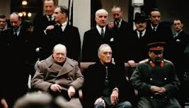
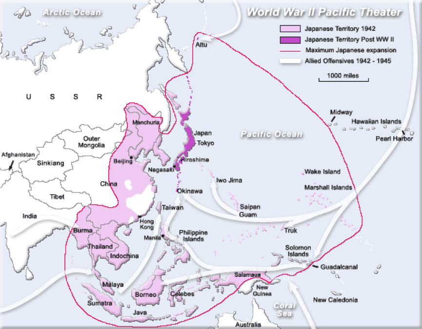
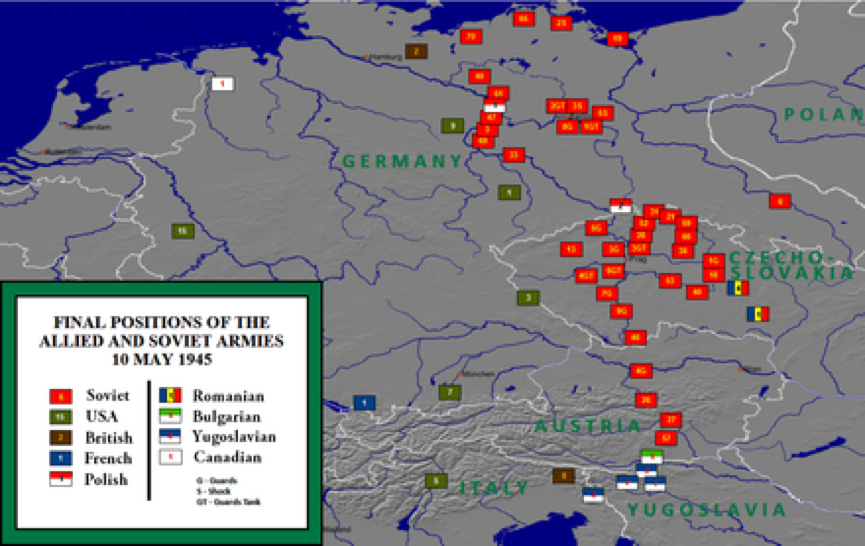
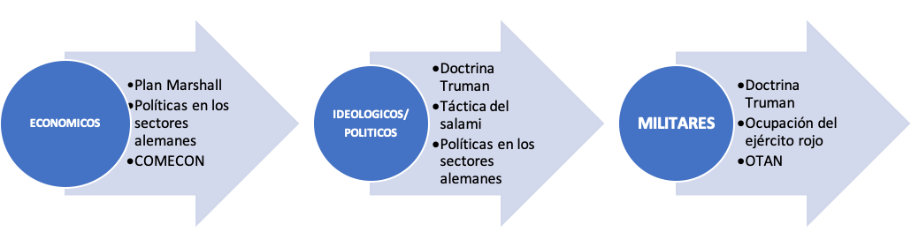
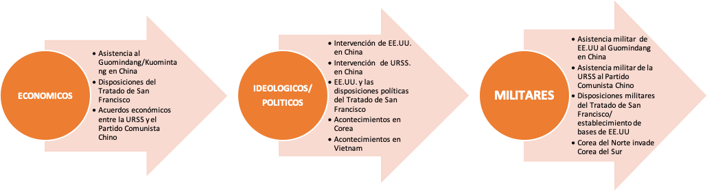

IB Docs (2) Team
IB Docs (2) Team

4. La Segunda Guerra Mundial: Consecuencias

Esta página analiza las consecuencias de la Segunda Guerra Mundial. Hay una variedad de ENFOQUES DE APRENDIZAJE que invitan a los estudiantes a apreciar los efectos económicos, políticos e ideológicos de la guerra así como el impacto de la pacificación.Preguntas orientadoras:
¿Cuál era la situación en Europa y Asia al final de la Segunda Guerra Mundial?
¿Cuáles fueron los efectos políticos e ideológicos de la Segunda Guerra Mundial?
¿Cuáles fueron las consecuencias territoriales de la Segunda Guerra Mundial?
¿Por qué se estableció la organización supranacional de las Naciones Unidas?
¿Hasta qué punto fue exitoso el Tratado de San Francisco?
¿Qué fueron los tribunales de crímenes de guerra surgidos después de la Segunda Guerra Mundial?
¿Por qué se desarrolló una carrera armamentista al final de la Segunda Guerra Mundial?
¿Cómo afectó la Segunda Guerra Mundial al papel de la mujer en la sociedad?
1. ¿Cuál era la situación en Europa y Asia al final de la Segunda Guerra Mundial?
Costo humano
La Segunda Guerra Mundial tuvo un costo humano catastrófico con algunas estimaciones de más de 50 millones de muertos, millones de heridos y más de 20 millones de personas desplazadas o deportadas. A diferencia de las anteriores guerras modernas entre estados, incluida la Primera Guerra Mundial, la mayoría de los muertos eran civiles. De hecho, quizás hasta dos tercios de los muertos de la guerra hayan sido no combatientes. Como una guerra global, sus efectos eran también transregionales. Nos centraremos en un análisis de los efectos de la Segunda Guerra Mundial en Europa y Asia.
El sufrimiento continuó después de la Segunda Guerra Mundial. Entre 1945 y 1947, aproximadamente 16 millones de alemanes fueron expulsados de los países de Europa Central y Oriental, y muchos murieron como resultado de este éxodo forzoso hacia el oeste. En China se reanudó la guerra civil, que se había suspendido entre los nacionalistas chinos y los comunistas para luchar contra los japoneses, y la matanza continuó.
Devastación económica
El costo económico de luchar una guerra total devastó las economías de los principales beligerantes, todos excepto los Estados Unidos. No sólo fue el costo de las armas, los suministros y el impacto económico de la pérdida de "mano de obra" y trabajo, sino también el costo de la devastadora destrucción de la guerra en el frente interno.
- Los bombardeos aéreos fueron particularmente destructivos. Muy pocas ciudades de cualquier tamaño quedaron indemnes, la industria y la infraestructura fueron atacadas y destruidas.
- Los bombardeos aéreos también dejaron a millones de personas sin hogar
- La guerra en la tierra también había destruido la industria y la agricultura
- Los ejércitos que avanzaban y retrocedían habían arrasado ciudades y pueblos enteros
- Las tierras de cultivo fueron destruidas, el ganado muerto, la tierra inutilizada por las minas y los escombros de guerra. La producción de alimentos cayó en Europa al 50% de los niveles anteriores a la guerra
- 150 millones de europeos dependían de la ayuda alimentaria después de 1945
Tarea Uno
ENFOQUES DE APRENDIZAJE: Habilidades de investigación
Completarán una breve tarea de investigación. En grupos de seis investigan el impacto económico de la Segunda Guerra Mundial en los siguientes países:
- Japón
- China
- Gran Bretaña
- Alemania
- La URSS
- EE.UU.
Informa de tus hallazgos a tu grupo. ¿Cuáles son las similitudes entre el impacto de la guerra en los estados "vencedores" y "vencidos"? ¿Por qué la economía de EE.UU. no fue impactada negativamente por la Segunda Guerra Mundial?
Tensiones políticas
Tarea Uno
ENFOQUES DE APRENDIZAJE: Habilidades de pensamiento
De a dos, miren los dos mapas a continuación. ¿Qué notan sobre las posiciones finales de los ejércitos aliados en Europa en 1945? ¿Qué notan sobre las posiciones finales de los ejércitos aliados en Asia en 1945? Deben tener en cuenta que la URSS sólo entró en la guerra en Asia después de declarar la guerra a Japón el 8 de agosto


Tarea dos
ENFOQUES DE APRENDIZAJE: Habilidades de pensamiento
Mira el primer episodio de la serie de la Guerra Fría de la CNN a partir del minuto 24
Teherán:
- ¿Qué pasó en la Conferencia de Teherán que podría ser significativo para el mundo posterior a la Segunda Guerra Mundial?
- ¿Cuál fue la importancia de las acciones de Stalin en relación con el levantamiento de Varsovia?
- ¿Cuál fue la importancia del acuerdo entre Stalin y Churchill?
Yalta:
- ¿Cuál fue el "error" cometido por Roosevelt en Yalta?
- ¿Por qué los soviéticos estaban en una posición fuerte para tomar Polonia y gran parte de Europa del Este?
- ¿Qué decisiones sobre Polonia y Europa del Este se decidieron en Yalta?
- ¿Qué se decidió sobre Alemania y la guerra?
Potsdam:
- ¿Cuál fue la actitud de Truman hacia Stalin en Potsdam?
- ¿En qué se diferenciaba de lo que había sucedido en Yalta?
- ¿Por qué Stalin no tuvo que unirse a la guerra en el Pacífico?
- ¿Por qué Stalin no se sorprendió con la bomba atómica?
Tarea Tres
ENFOQUES DE APRENDIZAJE: Habilidades de pensamiento
Revisa los principales acuerdos alcanzados y las principales áreas de desacuerdo que surgieron durante las conferencias de Teherán en 1943, y de Yalta y Potsdam en 1945.
En pequeños grupos, representen la sesión final de la reunión de Potsdam. Su juego de roles debe incluir: Stalin y un representante soviético; Truman y un representante de EE.UU.; Enfoques de aprendizajeee y un representante británico.
Su juego de roles debe incluir la conclusión de las discusiones sobre las decisiones, acuerdos y áreas de disputa en relación con cada uno de los siguientes:
- Alemania
- Polonia
- Europa del Este
- Japón
- Naciones Unidas
2. ¿Cuáles fueron los efectos políticos e ideológicos a largo plazo de la Segunda Guerra Mundial?
“La Guerra Fría comenzó donde había quedado en 1941, con una profunda desconfianza en los motivos soviéticos y una división ideológica tan profunda como la existente entre el liberalismo y el nazismo... Los estrategas estadounidenses pasaron sin esfuerzo del mundo maniqueo al siguiente”.
Richard Overy, Why the Allies Won, 2006, pg. 404
El acontecimiento político más significativo de la posguerra fue la derrota del fascismo italiano, el nazismo alemán y el militarismo nacionalista japonés. Los vencedores políticos e ideológicos fueron las democracias liberales capitalistas y el comunismo soviético. Las ramificaciones de esto surgieron en términos de relaciones internacionales. La guerra había cambiado dramáticamente el equilibrio de poder. Después de la Segunda Guerra Mundial, como el político estadounidense Dean Acheson escribió "Toda la estructura y el orden mundial que habíamos heredado del siglo XIX había desaparecido”.
El surgimiento de las "superpotencias" después de 1945 determinaría la naturaleza ideológica, política, económica y militar del mundo de la posguerra.
Las superpotencias surgieron debido a lo siguiente:
- Los EE.UU. habían desarrollado la mayor fuerza aérea del mundo durante la Segunda Guerra Mundial.
- La URSS había desarrollado la mayor fuerza terrestre convencional del mundo.
- La economía de EE.UU. se fortaleció por la guerra. Después de la guerra pudo superar a todas las demás potencias juntas.
- La economía soviética necesitaba reconstrucción y recuperación. Se beneficiaría del establecimiento de otras economías comunistas en la región. Los países de Europa del Este que se habían formado después del final de la Primera Guerra Mundial eran económicamente débiles e inestables, y necesitaban el apoyo de un vecino más fuerte, y la URSS podía sustituir a Alemania en este papel.
- La victoria ideológica de los EE.UU. y la URSS en la Segunda Guerra Mundial fortaleció el potencial para dar forma a la naturaleza política de los estados en el período de posguerra.La democracia capitalista liberal o el comunismo podían llenar el vacío político dejado tras la eliminación de los regímenes derrotados.
- La Segunda Guerra Mundial fomentó el crecimiento de los movimientos de descolonización. Los nuevos estados independientes necesitarían establecer un nuevo orden político.
El impacto de la ruptura de la Gran Alianza y el surgimiento de la rivalidad entre las superpotencias significó:
- La división política, económica y militar de Europa en dos campos opuestos.
- La participación de las superpotencias en guerras de "poder" en Asia
Primera tarea
ENFOQUES DE APRENDIZAJE: Habilidades de pensamiento
1.Lee los extractos en la hoja adjunta sobre por qué la URSS y los EE.UU. emergieron como superpotencias.
a. Establece cuál es la cuestión en cada extracto y determina si da una razón vinculada a factores militares, económicos o políticos.
b. Crea un mapa mental que muestre los factores militares, económicos y políticos que llevaron al surgimiento de las superpotencias. Usa las fuentes para dar evidencia detallada. ¿Puedes pensar en otros factores?
c. Discute en parejas si el hecho de que dos potencias hayan surgido como superpotencias significa que el choque era inevitable e independiente de sus diferencias ideológicas. En otras palabras, ¿hasta qué punto se explica la creciente tensión después de 1945 en términos de la rivalidad tradicional de las grandes potencias?
 Por que EE.UU. y la URSS emergieron como superpotencias en 1945?
Por que EE.UU. y la URSS emergieron como superpotencias en 1945?
Como has visto, Europa Occidental se debilitó política y económicamente después de la Segunda Guerra Mundial. Nunca más tendría tanta influencia en la política internacional. Asimismo, la influencia militar y económica de los EE.UU. se convirtió en clave. De hecho, el Plan Marshall permitió a Europa Occidental recuperarse y las dos décadas siguientes fueron testigo de un período de crecimiento económico sostenido.
Hubo otros acontecimientos políticos, sociales y económicos clave:
- con la eliminación del fascismo, Europa Occidental también vio el establecimiento de democracias multipartidistas
- se introdujo una legislación social para proporcionar una amplia gama de servicios sociales (por ejemplo, el Estado de Bienestar en Gran Bretaña)
- la devastación de la guerra, la amenaza comunista y el deseo de prevenir futuros conflictos también condujeron a una cooperación mucho mayor entre los estados europeos que finalmente dio lugar a la Comunidad Económica Europea (CEE) en la década de 1950
Tarea Dos
ENFOQUES DE APRENDIZAJE: Habilidades de pensamiento e investigación
De a dos, investiguen las repercusiones del enfrentamiento de las superpotencias emergentes en Europa y Asia hasta 1950. Un estudiante debe centrarse en Europa, otro en Asia.
Comparte tu investigación con tu compañero. ¿Cuáles fueron las principales características del impacto de la confrontación de las superpotencias de la posguerra en Europa y Asia? ¿Cuáles son las similitudes y las diferencias?
Para empezar, aquí hay algunos eventos y temas clave:

Asia

3. Cuáles fueron las consecuencias territoriales de la Segunda Guerra Mundial?
Al final de la Primera Guerra Mundia se inventaron y amustaron fronteras mientras la gente se quedaba en su lugar. Después de 1945, lo que sucedió fue más bien lo contrario, con una excepción importante: las fronteras permanecieron intactas y fue la gente quien se trasladó
Tony Judt, Postwar, Vintage, 2010, pg 27
Tarea Uno
ENFOQUES DE APRENDIZAJE: Habilidades de pensamiento
¿Cuáles fueron, según el extracto a continuación, las consecuencias territoriales de la Segunda Guerra Mundial?
No hubo los dramáticos cambios de límites después de la Segunda Guerra Mundial que habían resultado de los acuerdos de la Primera Guerra Mundial. El único ajuste importante en Europa fue con respecto al territorio polaco y alemán. Las fronteras de Polonia se redibujaron hacia el oeste - ganó 104.000 kilómetros cuadrados de territorio alemán en su frontera occidental y perdió 179.000 kilómetros cuadrados de tierra en el este. Estos nuevos límites fueron decididos en la segunda conferencia de la Gran Alianza en tiempo de guerra, en Yalta en febrero de 1945. Sin embargo, a pesar de un total de tres conferencias en tiempo de guerra los aliados no pudieron acordar los términos de los principales tratados en Europa. Más bien, el enfrentamiento entre las superpotencias emergentes condujo al desarrollo de "esferas de influencia" en Europa y a la división de Alemania en dos estados separados. Los países que el Ejército Rojo había liberado: Polonia, Hungría, Bulgaria y Checoslovaquia se convirtieron en regímenes de partido único bajo control soviético en 1948.
En Asia, Japón fue despojado de sus antiguas colonias. Una vez más, los acuerdos relativos a la ocupación temporal de países como Corea condujeron finalmente al desarrollo de regímenes antagónicos y a conflictos que provocaron intervenciones de las superpotencias.
Tarea dos
ENFOQUES DE APRENDIZAJE: Habilidades de pensamiento y autogestión
De a dos, discutan los efectos políticos, económicos y territoriales clave de la Segunda Guerra Mundial.
¿Hasta qué punto están de acuerdo en que el enfrentamiento entre las superpotencias era "inevitable" después de la Segunda Guerra Mundial?
4. ¿Por qué se estableció la organización supranacional de las Naciones Unidas?
Tarea Uno
ENFOQUES DE APRENDIZAJE: Habilidades de pensamiento y sociales
Formen grupos de cuatro. Investigarán la organización de las Naciones Unidas que se estableció al final de la Segunda Guerra Mundial.
Vayan a la página web de la ONU
Tendrán que responder a las siguientes preguntas:
- ¿Qué se establece en la Carta de las Naciones Unidas?
- ¿Cuáles fueron las ideas y principios fundadores de las Naciones Unidas?
- ¿Cuáles son las funciones de sus órganos principales y organismos especializados?
- ¿Quiénes son los estados miembros?
A continuación, debes ir a Historia de las Naciones Unidas
Elaboren una línea de tiempo de la historia de las Naciones Unidas entre:
1945 -----------------------------------------------------------------1971
Su grupo debe entonces identificar y discutir:
- las principales intervenciones realizadas por la ONU entre 1945 y 1971
- los desafíos y cuestiones clave que afrontaba la ONU
- ¿cuándo tuvo éxito la ONU en el establecimiento y/o mantenimiento de la paz?
- ¿cuándo la ONU no tuvo éxito en el establecimiento y/o mantenimiento de la paz?
Presenten sus hallazgos a la clase
Tarea Dos
ENFOQUES DE APRENDIZAJE: Habilidades de pensamiento y comunicación
Organicen un debate en clase sobre la siguiente resolución:
Las Naciones Unidas fueron ineficaces entre 1945 y 1971 debido a la rivalidad y la confrontación de las superpotencias.
5. ¿Hasta qué punto fue exitoso el Tratado de San Francisco?
Aunque los EE.UU. no invadieron Japón al final de la Segunda Guerra Mundial, el país fue totalmente derrotado y se rindió incondicionalmente el 15 de agosto, firmando las condiciones el 2 de septiembre. Tras su rendición, los EE.UU. ocuparon Japón. Japón había sido devastado por el bloqueo naval y el bombardeo aéreo de los EE.UU. La ocupación militar de los EE.UU. le permitió supervisar el período inmediato de posguerra en Japón, ya que el Tratado de San Francisco no se firmó hasta septiembre de 1951. Los EE.UU. tenía el control total sobre Japón durante este período y, debido a la ruptura de la Gran Alianza con la URSS y su ocupación militar, podía imponer sus objetivos sin interferencias.
Tarea Uno
ENFOQUES DE APRENDIZAJE: Habilidades de pensamiento e investigación
De a dos, investiguen lo siguiente sobre el Tratado de San Francisco (haga clic en el ojo para obtener información adicional)
- Los objetivos de los EE.UU.
- Las disposiciones del Tratado
- La actitud soviética hacia el Tratado
- Los resultados del tratado para las relaciones entre los Estados Unidos y el Japón
- Los veredictos de los historiadores sobre el Tratado
Los objetivos de los Estados Unidos:
- desmilitarizar el Japón
- acabar con el imperialismo japonés
- estabilizar y fortalecer la democracia
- inculcar los valores de EE.UU. social y políticamente
- reconstruir y fortalecer una economía capitalista
Durante las reuniones de discusión y redacción del Tratado de San Francisco, la URSS planteó objeciones a los términos que favorecían la relación de Japón con EE.UU. Cuando se finalizaron las disposiciones, los soviéticos se negaron a firmarlo. China había luchado contra el Japón entre 1937 y 1945. Sin embargo, ni la República Popular China [establecida después de que el partido comunista de Mao Zedong (Mao Tse-tung) ganara la guerra civil china en octubre de 1949] ni la República China de Taiwán [establecida por las fuerzas nacionalistas de Chiang Kai-shek (Jiang Jieshi) que habían huido a la isla al final de la guerra civil china] fueron invitadas a la conferencia de paz. Tampoco lo fueron Corea del Norte y Corea del Sur. India y Birmania se negaron a participar, y Filipinas no firmó el tratado hasta después de su implementación. Aunque Indonesia firmó el tratado, nunca lo ratificó.
Las disposiciones del Tratado de San Francisco:
- Japón renunció a todos los reclamos sobre Taiwán, Sajalin y las islas Kuriles.
- Las Islas del Pacífico de Micronesia debían administrarse bajo un régimen de fideicomiso de las Naciones Unidas.
- Las islas Ryuku y Bonin fueron entregadas a los Estados Unidos.
- Japón tuvo que aceptar los fallos del Tribunal Militar Internacional para el Lejano Oriente y accedió a ejecutar las sentencias impuestas.
- Se establecieron directrices para la repatriación y la indemnización de los prisioneros de guerra.
- Japón renunció a futuras agresiones militares bajo las pautas establecidas por la Carta de las Naciones Unidas.
- Los tratados anteriores firmados por el gobierno japonés fueron anulados.
- Japón sólo podía mantener un ejército de naturaleza puramente defensiva.
- No se establecieron reparaciones, sin embargo, Japón debía ayudar a rehabilitar los países que habían sufrido daños debido a la ocupación japonesa.
Además del Tratado de San Francisco, el Tratado de Seguridad entre EE.UU y Japón fue firmado en 1951. El mismo hizo de Japón un protectorado militar de los EE.UU. El tratado estipulaba la retención de las bases americanas en Japón y permitía a los EE.UU. utilizar sus fuerzas estacionadas allí de cualquier manera que contribuyera al "mantenimiento de la paz y la seguridad internacional en el Lejano Oriente". El acuerdo también prohibía a Japón conceder bases militares a cualquier otra potencia sin el consentimiento de los Estados Unidos.
Al igual que Alemania Occidental, que se instituyó después del bloqueo de Berlín en 1949, Japón se convirtió en un aliado cercano y fiable de las potencias occidentales. También se convirtió en una democracia estable políticamente y reconstruyó y desarrolló una fuerte economía capitalista. Además, Japón se convirtió en una importante base militar y estratégica para los EE.UU. en su lucha contra el comunismo en Asia.
La economía de Japón se desarrolló rápidamente y, tras el llamado milagro económico de la década de 1950, Japón surgió como una potencia económica en Asia. También tuvo una sucesión de gobiernos conservadores en el período de posguerra que respetaron el mandato popular de centrarse en el crecimiento económico como su prioridad. De este modo, los Estados Unidos lograron su objetivo de hacer del Japón una democracia capitalista estable y un baluarte contra la propagación del comunismo en el Lejano Oriente.
Sin embargo, algunos historiadores han cuestionado hasta qué punto esto se debió a las políticas de pacificación y el Tratado implementado por los EE.UU. o, en cambio, a la conducta y la visión de los propios japoneses. El aparente éxito del Tratado de San Francisco puede haberse debido a que el propio pueblo japonés rechazó el militarismo y el imperialismo después de la Segunda Guerra Mundial. El historiador Kenneth Pyle se refiere a las memorias del general MacArthur en las que afirma que el primer ministro Shidehara había sugerido en 1946 que la cláusula de desmilitarización se añadiera a la nueva constitución japonesa. Aunque William G. Beasley no está de acuerdo con Pyle y argumenta que la cláusula fue idea de MacArthur, la mayoría de los historiadores están de acuerdo en que había un rechazo muy arraigado al militarismo en el Japón de la posguerra.
Además, a medida que se intensificaba la Guerra Fría, los Estados Unidos cambiaron sus objetivos para el Japón y lo alentaron a instituir una gran fuerza militar y a unirse a una alianza de defensa regional para desempeñar un papel más significativo en la contención del comunismo en la región. El gobierno japonés se resistió a estas demandas. Los japoneses comprendieron que la presencia de EE.UU. en Japón disuadiría un ataque soviético y esto significaba que podría centrar la inversión del gobierno en el desarrollo económico mientras EE.UU. se ocupaba del "proyecto de ley de defensa".
Tarea Dos
ENFOQUES DE APRENDIZAJE: habilidades de pensamiento y autogestión
Copie y completa ella siguiente cuadro utilizando la información que has investigado sobre los efectos de la Segunda Guerra Mundial en Europa y Asia, y los éxitos relativos del Tratado de San Francisco.
Pacificación | Europa | Asia |
Evidencia de éxito | ||
Evidencia de frasaco |
6. ¿ Qué fueron los tribunales de crímenes de guerra surgidos después de la Segunda Guerra Mundial?
Al final de la Segunda Guerra Mundial, se crearon tribunales para juzgar a los criminales de guerra tanto en Europa como en Asia. El juicio de los criminales de guerra alemanes tuvo lugar en Nuremberg; el Tribunal de Nuremberg comenzó en noviembre de 1945 y duró hasta octubre de 1946. Este juicio fue el primero de este tipo en la historia. Veintiún nazis prominentes fueron acusados de crímenes de guerra y crímenes contra la humanidad. Once fueron condenados a la pena de muerte. En Japón, el general MacArthur llevó a cabo juicios contra criminales de guerra y 28 de los líderes de Japón fueron juzgados ante un tribunal internacional en Tokio. En un período de seis años, 5.700 criminales de guerra japoneses fueron juzgados ante los tribunales aliados, y unos 1.000 fueron ejecutados.
Tarea Uno
ENFOQUES DE APRENDIZAJE: Habilidades de pensamiento e investigación
De a dos, exploren el Tribunal de Nuremberg
Luego exploren el Tribunal de Crímenes de Guerra de Tokio.
Discutan la naturaleza de los cargos que se hacen contra los acusados. Identifiquen las características principales de la defensa hecha por los individuos enjuiciados. Comparen y contrasten los cargos, decisiones y veredictos emitidos en los tribunales de Nuremberg y Tokio.
7. ¿Por qué se desarrolló una carrera armamentista al final de la Segunda Guerra Mundial?
Como has visto, una razón militar clave para el surgimiento de las superpotencias después de la Segunda Guerra Mundial fue la creación por parte de la Unión Soviética de la mayor fuerza terrestre del mundo para derrotar a la Alemania nazi y el desarrollo por parte de los Estados Unidos de la mayor fuerza aérea no sólo para derrotar a la Alemania nazi sino también para derrotar a Japón en el Pacífico. Por lo tanto, en 1945 la URSS y los EE.UU. eran las potencias militares dominantes y, como la Gran Alianza se rompió, hubo una renovación de los gastos militares y de una carrera de armas convencionales entre las dos superpotencias.
Sin embargo, una nueva y mortal dinámica en el período de posguerra fue la rivalidad en una nueva carrera de armas nucleares. El presidente Truman había decidido usar la nueva tecnología de la bomba atómica para terminar la guerra en el Pacífico. Estas nuevas armas de destrucción masiva fueron lanzadas sobre Hiroshima y Nagasaki. Algunos historiadores sostienen que el uso de armas atómicas no era de hecho militarmente necesario para derrotar a Japón y fue el primer acto de la Guerra Fría. Aunque esta idea también ha sido refutada por otros historiadores, lo que está claro es que Hiroshima sería el comienzo de la carrera de armas nucleares entre la URSS y los EE.UU.
Tarea Uno
ENFOQUES DE APRENDIZAJE: Habilidades de pensamiento
De a dos, consideren la definición de militarismo a continuación.
Militarismo
- El militarismo es una ideología que sostiene que los militares son la base de la seguridad de una sociedad, y por lo tanto su aspecto más importante.
- La creencia de que un país debe mantener una fuerte capacidad militar y estar preparado para usarla agresivamente para defender o promover los intereses nacionales.
Discutan las razones para el desarrollo de una carrera de armamentos después de la Segunda Guerra Mundial. ¿Cómo puede considerarse al militarismo renovado como un fracaso de los pacificadores al final de la Segunda Guerra Mundial?
8. ¿Cómo afectó la Segunda Guerra Mundial al papel de la mujer en la sociedad?
Como habrás comprobado en las investigaciones sobre el alcance de la movilización humana y material, la Segunda Guerra Mundial condujo a la movilización de las mujeres en muchos de los estados beligerantes. Algunos historiadores han sostenido que, como ocurrió durante la Primera Guerra Mundial, la totalidad de la guerra condujo a una mayor igualdad entre los géneros, ya que las mujeres asumieron funciones económicas, sociales y a menudo militares que habían sido tradicionalmente dominio de los hombres en la sociedad. Sin embargo, al igual que en la Primera Guerra Mundial, esta nueva igualdad era a menudo temporal y las expectativas de las sociedades y las oportunidades para las mujeres después de la Segunda Guerra Mundial no duraron cuando millones de hombres regresaron de los frentes de combate.
Durante la Segunda Guerra Mundial, las mujeres no sólo habían asumido trabajos de mano de obra en la agricultura y la industria, sino también funciones especializadas, que iban desde el trabajo en fábricas de municiones hasta el empleo en medicina e ingeniería. También desempeñaron un papel clave en los movimientos de resistencia en los países ocupados. En la URSS, las mujeres participaban plenamente en las funciones de combate en el frente. De hecho, varias mujeres soviéticas recibieron los más altos honores por su valentía y acción militar, tenían su propia división de la fuerza aérea y había francotiradoras. Sin embargo, hubo fuertes presiones en todas las sociedades de la posguerra para que las mujeres volvieran a los roles que habían tenido antes de la guerra. Aunque la mayoría de las mujeres volvieron a los roles tradicionales de la sociedad, las experiencias de trabajo y la relativa libertad desempeñaron un papel clave, al menos en Occidente, en el crecimiento del movimiento feminista que cobró impulso en la década de 1960.
Un ejemplo de la dificultad de evaluar el impacto de la guerra en el papel de la mujer en la sociedad puede verse en el impacto de las guerras mundiales en las mujeres británicas. Al final de la Primera Guerra Mundial, Gran Bretaña aprobó un proyecto de ley de concesión de derechos que otorgaba a las mujeres mayores de 30 años el derecho a votar. Este fue un cambio tangible y permanente en la posición de la mujer en la sociedad británica. No obstante, los historiadores han argumentado que, aunque la labor de la mujer en la guerra fue el catalizador final de este acto, los cimientos del cambio se habían construido antes de la guerra y, esencialmente, el movimiento sufragista ya había "ganado" el debate. Durante la Segunda Guerra Mundial, las mujeres se movilizaron en Gran Bretaña y participaron en funciones económicas y militares clave. Sin embargo, una estadística interesante sugiere que este cambio fue sólo temporal ya que antes de la Segunda Guerra Mundial, en 1931, las mujeres habían constituido el 29,8% de la fuerza de trabajo y en 1951 esta proporción había aumentado a sólo el 30,8%.
Tarea Uno
ENFOQUES DE APRENDIZAJE: Habilidades de investigación y pensamiento
Formen grupos de cuatro. Cada uno investigará el impacto de la Segunda Guerra Mundial en la sociedad de un país diferente. Necesitan seleccionar un país en el que haya habido algún grado de movilización de las mujeres durante los años de la guerra. El objetivo de su investigación es encontrar evidencia que desarrolle la idea en la siguiente cita de los historiadores Jocelyn Hunt y Sheila Watson:
No hay duda de que [la Segunda Guerra Mundial] rompió algunas barreras para el avance de la mujer en la sociedad. Sin embargo, al final, cuando los hombres volvieron a casa, ¿las actitudes y las oportunidades realmente cambiaron mucho?
Comparte tu investigación con tu grupo. Usando tu investigación, planifica con tu grupo la siguiente pregunta de ensayo:
Con referencia a los efectos de una guerra del siglo XX, discuta los cambios en el papel y la condición de la mujer.
 Twitter
Twitter
 Facebook
Facebook
 LinkedIn
LinkedIn